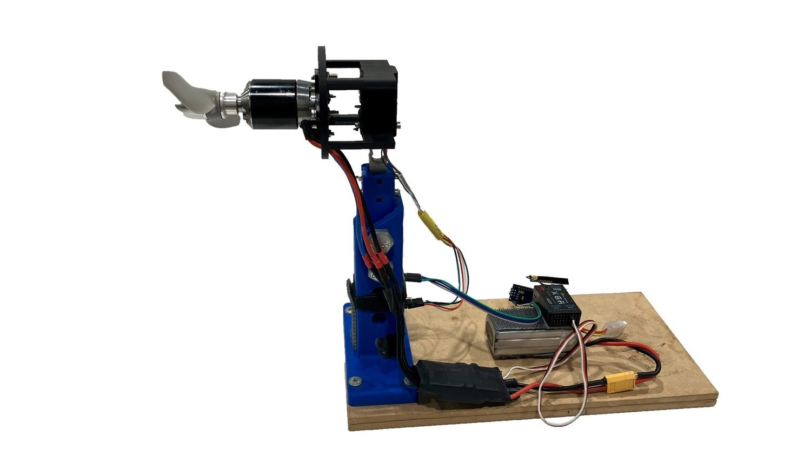
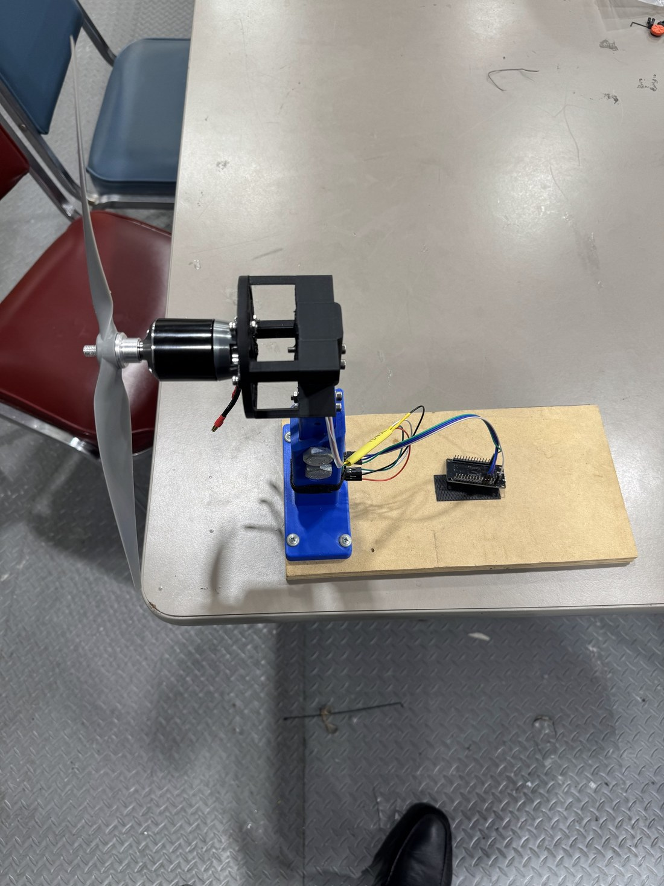
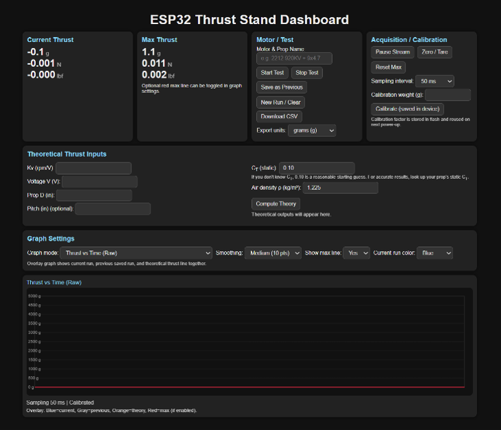

The SMART Hawk · Propulsion test system
The Thrust Stand
Reconfigured as a reliable propulsion instrument, this static test rig measures axial thrust through a 5 kg load cell and streams results to an ESP32 hosted dashboard. Testing identified the motor and propeller configuration used on The SMART Hawk.

Propulsion selection
Converting a design velocity into verified hardware
The SMART Hawk aerodynamic model assumed an 11 m/s cruise condition. Propulsion testing was therefore required to verify that a production motor and propeller could provide adequate thrust for the 1.67 kg airframe.
Compared 1100 KV and 1250 KV motors across multiple propeller configurations. The selected 1250 KV motor with an 11 × 5.5 inch propeller produced 18 N of static thrust, giving the morphing aircraft a thrust to weight ratio of 1.1.
Upgraded the 9th cohort mechanical platform by correcting the sensor wiring, improving communication reliability, and developing a new browser based data acquisition interface.

Measurement architecture
Direct axial load measurement
Aligned the motor, structural reaction path, and load cell to prioritize axial thrust while minimizing sensitivity to off axis loading.
Data acquisition interface
Self contained wireless instrumentation
Configured the ESP32 as an independent Wi Fi access point that serves the dashboard from onboard memory, eliminating dependence on laboratory networking or installed host software.
Displays live and maximum thrust in grams, newtons, and pounds force; provides start, pause, tare, and maximum reset controls; and plots force on a fixed 0–5000 g scale for consistent comparison of startup, steady state, and shutdown behavior.
Supports user selectable sample intervals from 10 ms to 2000 ms, with a 50 ms default, and exports each test as a timestamped CSV for post processing.

- Axial force measurement to approximately 49 N, calibrated against a known mass with nonvolatile coefficient storage.
- Live data acquisition in 3 engineering units, including time history plotting and CSV export.
- Propulsion comparison — selected the motor and propeller configuration installed on The SMART Hawk.
- Integrate 2 additional force transducers to resolve loading in X, Y, and Z.
- Extend the platform from axial thrust characterization to 3 axis propulsion interaction measurement for asymmetric aircraft wake conditions.
Inherited the physical rig from the 9th cohort and led its instrumentation and software redesign.
Rewired the sensor outputs to match the firmware pinout, rebuilt the web interface, and revised ESP32 connection handling. These changes eliminated mid test communication drops and enabled continuous data capture, live plotting, and timestamped CSV export.